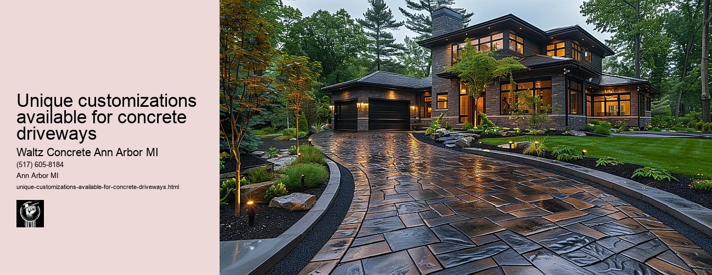

News
Concrete Driveway Installation Ann Arbor Mi
Concrete Driveway Installation Ann Arbor Mi
Choosing the right contractor for installation
Cost of concrete driveway installation in Ann Arbor
Permit requirements for driveway installation in Ann Arbor
The process and timeline of concrete driveway installation
Different types of concrete used in driveways
Maintenance and Repair of Concrete Driveways in Ann Arbor Mi
Maintenance and Repair of Concrete Driveways in Ann Arbor Mi
Preventive maintenance tips for durability
Common causes for concrete driveway damage
Professional companies offering repair services in Ann Arbor
Doityourself versus professional repairs
Costs associated with repairing a concrete driveway
Designs and Styles of Concrete Driveways in Ann Arbor Mi
Designs and Styles of Concrete Driveways in Ann Arbor Mi
Popular design trends for driveways
Considering climate factors when choosing a design or style
Unique customizations available for concrete driveways
Influence of home architecture on driveway design
Stamped stained and decorative options
Environmental Impact of Concrete Driveways in Ann Arbor Mi
Environmental Impact of Concrete Driveways in Ann Arbor Mi
Carbon footprint associated with concrete production
Use of sustainable materials in concrete driveways
Drainage considerations to reduce environmental impact
Local regulations regarding environmentally friendly driveways
Potential use of permeable or porous pavement
Alternatives to Concrete Driveways in Ann Arbor Mi
Alternatives to Concrete Driveways in Ann Arbor Mi
Asphalt driveways and their proscons
Paver stone driveways and their benefitsdrawbacks
Gravel or crushed stone as an alternative option
Comparing costs between different driveway materials
Resinbound surfaces as emerging technology
About Us
Contact Us

Unique customizations available for concrete driveways
Unique customizations available for concrete driveways
Title: The Unique Customizations Available for Concrete Driveways
In the realm of home improvements and decor, one area that often gets overlooked is the driveway. While it might seem like a trivial part of your property, a well-designed concrete driveway can significantly enhance the aesthetic appeal and value of your home. Concrete driveways offer durability and longevity unmatched by other materials. But what sets them apart even more are the unique customizations available to homeowners who want their driveways to be both functional and aesthetically pleasing.
Firstly, we have decorative concrete which has been used to transform traditional grey concrete into warm brown floors, expensive slate-looking patios, and weather-resistant outdoor kitchens. It's this transformation at such affordable prices that makes decorative concrete more popular.
Stamped or imprinted concrete is another customization option for those seeking an upscale look without blowing their budget. This technique involves stamping patterns into the wet concrete to mimic texture and designs of different materials like stone, brick, tile or wood. With countless design options available - from geometric patterns to nature-inspired motifs homeowners can create a truly personalized driveway that complements their home exterior.
Staining is another method used to customize concrete driveways. Stains penetrate the surface of the driveway, infusing it with rich, vibrant colors that do not fade or peel away over time. From earthy tones like terra cotta and brown to vivid shades of blue or green- staining offers limitless possibilities for creativity.
Exposed aggregate is an innovative approach where small pebbles or colorful glass pieces are embedded into the surface of the driveway for added visual interest. The result is a textured surface that provides extra grip underfoot while also boasting a distinctive appearance.
Engraving or etching gives your driveway an artistic flair by carving intricate designs directly onto its surface. With precision tools, professionals can create everything from simple geometric patterns to complex landscapes on your drive way.
Another unique customization involves adding glow-in-the-dark aggregates that absorb sunlight during the day and glow at night. This not only adds a whimsical touch to your driveway but also improves visibility in low light conditions.
Customizing your concrete driveway can also be as simple as mixing colored concrete right into the mix, giving the entire slab a consistent color all the way through. Or perhaps consider adding borders or bands of different colors and patterns for an extra layer of sophistication.
Concrete driveways are no longer just about functionality; they've become canvases on which homeowners can express their personal style. With endless possibilities for customization, you can design a durable, cost-effective driveway that adds curb appeal and increases property value. Whether you prefer a classic look or want to make a bold statement, there's a unique concrete driveway customization option out there for you.
Considering climate factors when choosing a design or style
Unique customizations available for concrete driveways
Frequently Asked Questions
What unique customizations are available for concrete driveways in Ann Arbor, MI?
Theres a wide range of unique customizations available such as stamped concrete designs, colored concrete, exposed aggregate finish, and decorative borders. It is always important to consult with a professional contractor about the possibilities and limitations based on your specific location and driveway condition.
How does the climate in Ann Arbor affect the durability of customized concrete driveways?
The climate in Ann Arbor can indeed impact the longevity of a concrete driveway due to its heavy snowfall during winter. Therefore, it is critical to consider using a high-quality sealer to protect any custom designs or finishes from freezing temperatures and de-icing salts that can cause surface damage.
Can I personalize my concrete driveway with art or logo in Ann Arbor, Mi?
Yes, many contractors offer services to embed personal artwork or logos into your driveway. This could involve staining, stamping techniques or installing hand-cut stencils on top of the finished surface.
What maintenance do customized concrete driveways require in Ann Arbor, Mi?
While regular cleaning and resealing every couple of years are typically recommended for all types of concrete driveways regardless of their customization level. However, some custom designs might require additional care. For instance, colored surfaces might fade over time due to UV exposure and would need to be refreshed periodically. Your contractor should provide you with specific maintenance guidelines based on your chosen design.
Unique customizations available for concrete driveways